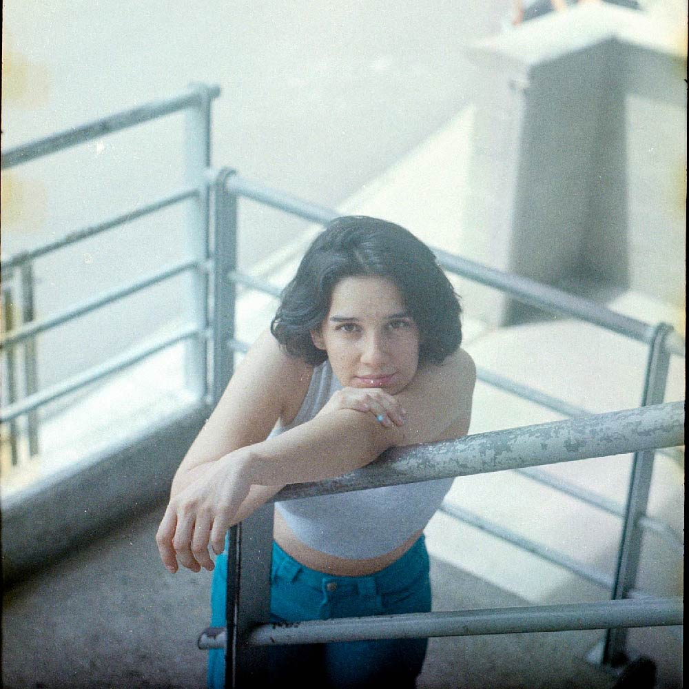

COSAS QUE PROBABLEMENTE NO VAN A PASAR
Este nuevo ciclo tiene una orquestación más robusta con relación a los anteriores cortes de la carrera de EV, dándole un reverb robusto a su guitarra característica mientras la cantautora imagina una serie de historias improbables y divertidas sobre las que reaccionaría de una manera particular, distinta a las alternativas que tomarían las demás personas de enfrentarse a esos azares de la vida. Así, Ev plantea una visión única que nos adentra en su universo particular, en su única mirada de la vida que la ha convertido en una figura destacada del pop alternativo colombiano. La canción, cuya composición y producción fue junto a Adán Naranjo, productor y multi-instrumentista de Medellín, con quien preparó su siguiente EP, a veces parece una mezcla de sonoridades difusa sobre la que sobresale la voz de la paisa, mientras que sintetizadores, xilófonos y máquinas construyen una atmósfera fantasiosa sobre la que la artista construye sus reflexiones.
EV regresa con la presentación de un nuevo sencillo, primer adelanto de su próxima producción discográfica que ha venido trabajando con el sello Falso Ídolo de Medellín.